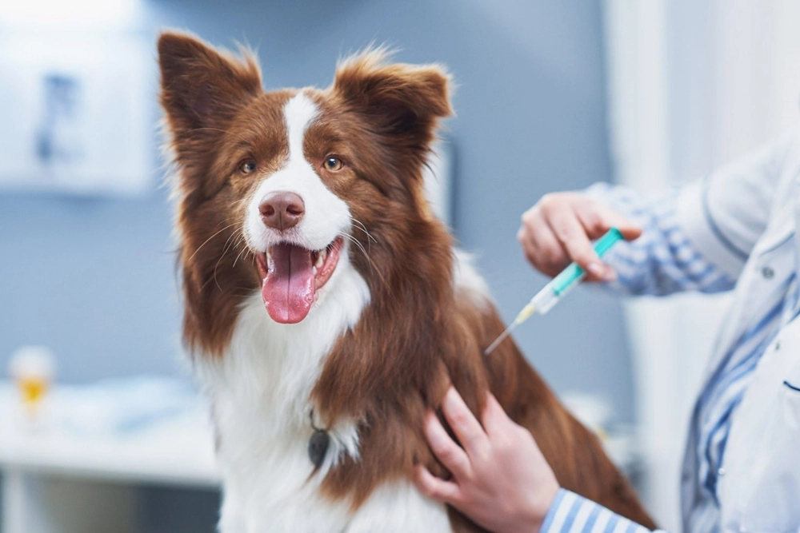
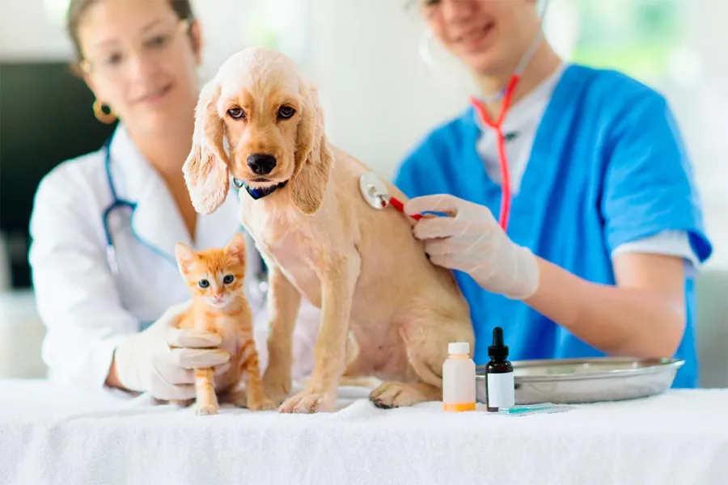

Conoce nuestro servicio de consulta general
Veterinaria San Marcos ofrece consultas para perros y gatos. Conoce la duración y el valor de este servicio.
Leer noticia sobre la consulta general
Veterinaria San Marcos ofrece consultas para perros y gatos. Conoce la duración y el valor de este servicio.
Leer noticia sobre la consulta general
Nuestro catálogo incluye distintos servicios de vacunación para mascotas. Conoce las opciones disponibles en la clínica.
Leer noticia sobre vacunación
La clínica ofrece desparasitación interna para perros y gatos, además de aplicación de antiparasitario externo.
Conocer los pasos para solicitar atención